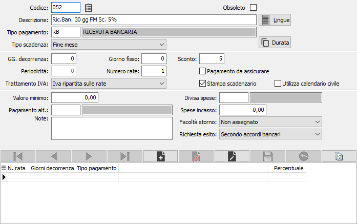
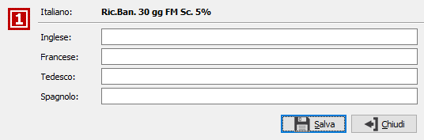
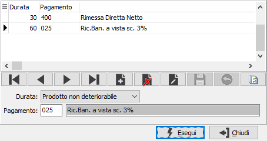
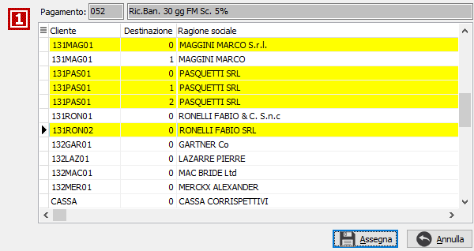

Se presente il modulo eCommerce sarà visualizzato il pulsante a lato accanto al codice del pagamento. Il pulsante consente l'assegnazione della modalità di pagamento attiva ad uno o più clienti/destinazioni tramite la seguente finestra.
Se presente il modulo eCommerce sarà visualizzato il pulsante a lato accanto al codice del pagamento. Il pulsante consente l'assegnazione della modalità di pagamento attiva ad uno o più clienti/destinazioni tramite la seguente finestra.Modalità di pagamento
Le modalità di pagamento, inserite nelle anagrafiche clienti e fornitori oppure impostate interattivamente durante le registrazioni contabili o l'emissione dei documenti, consentono la gestione degli scadenzari, delle partite aperte e degli effetti attivi.
Il codice della modalità di pagamento si articola su 3 caratteri alfanumerici. È consigliabile creare codici il cui primo carattere sia costituito da una lettera che richiama la tipologia del pagamento (D = rimessa diretta; R = ricevuta bancaria; B = bonifico; A = assegno (solo fornitori); T = tratta, ecc) ed i successivi 2 caratteri siano costituiti da 2 numeri progressivi per differenziare le varie periodicità nell'ambito della stessa tipologia.

CODICE: codice alfanumerico di 3 caratteri che identifica la modalità di pagamento in esame. Su questo campo sono attive le funzioni di ricerca.
DESCRIZIONE: campo alfanumerico di 50 caratteri per descrivere la modalità di pagamento in esame. Tale descrizione viene stampata sui documenti.
TIPO PAGAMENTO: codice alfanumerico di 2 caratteri, presente nella tabella Tipi pagamento, per determinare la tipologia di pagamento della modalità in esame. La compilazione del campo è obbligatoria. Taluni tipi di pagamento (RB - ricevuta bancaria; TR - tratta; BO - bonifico fornitori) determinano la successiva emissione di documenti di pagamento. Sul campo sono attive le funzioni di ricerca sulla relativa tabella.
TIPO SCADENZA: combo box per determinare la data base di calcolo della scadenza. Valori possibili:
data documento;
fine mese
data inizio pagamento (che verrà inserita manualmente dall'utente)
giorno fisso
giorno fisso fine mese
GIORNI DECORRENZA PRIMA SCADENZA: campo numerico per indicare il numero di giorni intercorrenti tra la data di tipo scadenza indicata nel campo precedente e la data della prima scadenza.
PERIODICITA: campo numerico per indicare il numero di giorni che intercorrono fra la prima scadenza e le eventuali successive.
GIORNO FISSO: campo numerico significativo solo in caso di tipi scadenza "giorno fisso" o "giorno fisso fine mese", per determinare il giorno fisso scadenza delle varie rate.
NUMERO RATE: campo numerico per indicare il numero delle rate su cui è ripartito il pagamento (o riscossione). Sono previste fino ad un massimo di 80 rate.
TRATTAMENTO IVA: combo box per indicare il tipo di trattamento Iva della modalità di pagamento attiva. Valori possibili:
Iva ripartita sulle rate;
Iva addebitata sulla prima rata;
Prima rata di sola Iva.
PERCENTUALE DI SCONTO: campo numerico di 3 interi e 2 decimali per indicare l'eventuale percentuale di sconto abbinata alla modalità di pagamento in esame. Verrà proposta automaticamente in fase di emissione documenti. Il segno di questo campo è dipendente come tutti i campi di tipo sconto dall'opzione "Tipo trattamento sconti" presente nella configurazione di base.
VALORE MINIMO: campo numerico per indicare l'eventuale importo necessario per l'applicazione della modalità di pagamento in esame. Se il valore del documento risultasse inferiore a questo importo, automaticamente verrà praticato il pagamento alternativo indicato nell'apposito campo.
PAGAMENTO ALTERNATIVO: codice alfanumerico di 3 caratteri, presente nella tabella Modalità di pagamento, per indicare la modalità di pagamento alternativa da utilizzare nel caso il valore del documento risulti inferiore al valore minimo previsto.
PAGAMENTO ASSICURATO: flag significativo solo se è attivo il modulo Assicurazione crediti. Se attivo, indica che la modalità di pagamento in esame interessa la gestione dell'assicurazione crediti.
STAMPA SCADENZARIO: flag significativo per gli utenti che emettono le fatture tramite OS1. Se attivo, segno di spunta, indica che la modalità di pagamento in esame esegue la stampa dello scadenzario in fattura.
UTILIZZA CALENDARIO CIVILE: consente di indicare che i valori "Giorni per prima scadenza" e "Periodicità", anche se multipli di 30, siano calcolati tenendo in considerazione il calendario civile e non il calendario commerciale (casella con segno di spunta). L'opzione non è modificabile se la modalità di pagamento è già stata utilizzata sui documenti.
DIVISA SPESE INCASSO: contiene la divisa in cui sono espresse le spese di incasso.
SPESE DI INCASSO: è l'importo delle spese di incasso, espresse nella divisa indicata nel campo precedente, da addebitare se previsto in anagrafica cliente.
FACOLTÀ STORNO: campo relativo alla generazione dei pagamenti RID; valori possibili: Si, No, Secondo accordi bancari.
RICHIESTA ESITO: campo relativo alla generazione dei pagamenti RID; valori possibili: Si, No, Secondo accordi bancari.
NOTE: campo note per eventuali ulteriori descrizioni, ad uso dell'utente, in merito alla modalità di applicazione ed utilizzo della modalità di pagamento in esame.
OBSOLETO: flag attivabile dall'utente per inibire il possibile utilizzo dell'elemento di tabella in esame nelle successive transazioni.
BOTTONE LINGUE: presente se in configurazione è abilitata la gestione lingue straniere, accede alla tabella collegata che consente di inserire la traduzione della descrizione della modalità di pagamento in esame in varie lingue estere. Le descrizioni in lingua vengono utilizzate in sede di emissione documenti relativi a clienti o fornitori nella cui anagrafica è indicata la necessità di utilizzo di una lingua estera.

BOTTONE DURATA: il pulsante "Durata", che attiva la finestra riportata sotto, viene utilizzato per indicare il codice pagamento alternativo da utilizzare per le due tipologie di prodotto (deteriorabile e non deteriorabile) in caso di cessioni di prodotti agricoli e agroalimentari (Art.62 DL 1/2012).

Nella parte bassa del video è presente una griglia nella quale è consentito inserire la tipologia delle singole rate, per poter creare delle modalità di pagamento di tipo misto; per esempio la prima rata con rimessa diretta e due ricevute. I campi sono i seguenti:
NUMERO RATA: campo numerico per indicare il numero della rata di pagamento.
GIORNI DECORRENZA: campo numerico per indicare il numero di giorni intercorrenti tra la data di tipo scadenza e la data della scadenza.
TIPO PAGAMENTO: codice alfanumerico di 2 caratteri, presente nella tabella Tipi pagamento, per determinare la tipologia di pagamento della modalità in esame. La compilazione del campo è obbligatoria. Taluni tipi di pagamento (RB - ricevuta bancaria; TR - tratta; BO - bonifico fornitori) determinano la successiva emissione di documenti di pagamento. Sul campo sono attive le funzioni di ricerca sulla relativa tabella.
PERCENTUALE: indica qual'è la percentuale, di quello che sarà l'importo totale da scadenzare, da considerare come importo per la rata in questione.
Se presente il modulo eCommerce sarà visualizzato il pulsante a lato accanto al codice del pagamento. Il pulsante consente l'assegnazione della modalità di pagamento attiva ad uno o più clienti/destinazioni tramite la seguente finestra.

Da questa finestra, dove sono visualizzati tutti i clienti/destinazioni a cui la modalità di pagamento attiva non risulta già assegnata, sarà possibile selezionare uno o più clienti/destinazioni a cui assegnare la modalità di pagamento attiva; la pressione del pulsante Assegna effettua la scrittura definitiva.